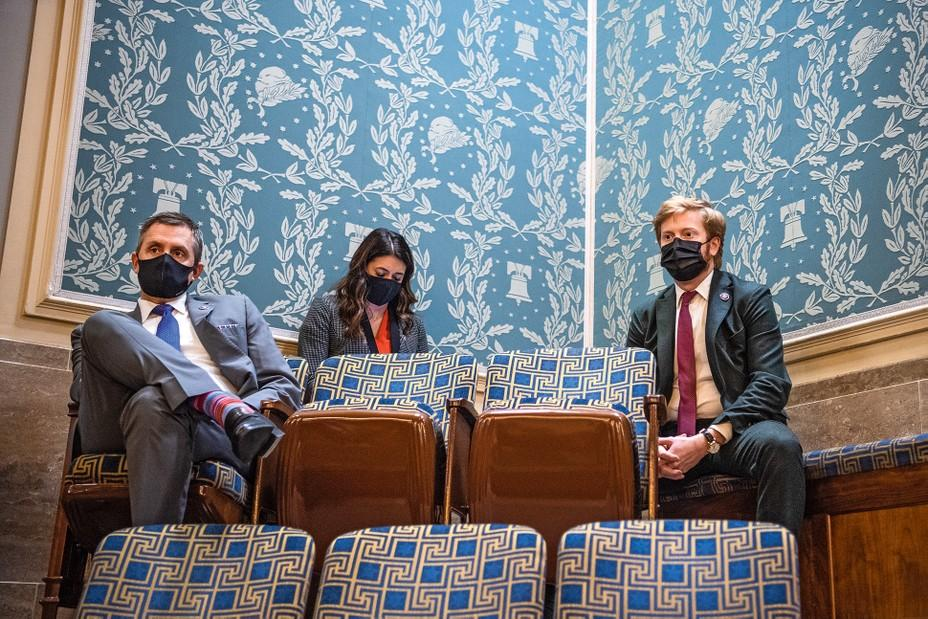
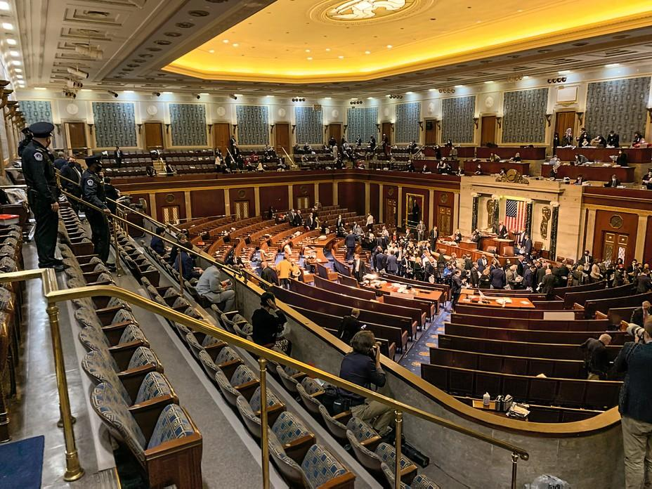
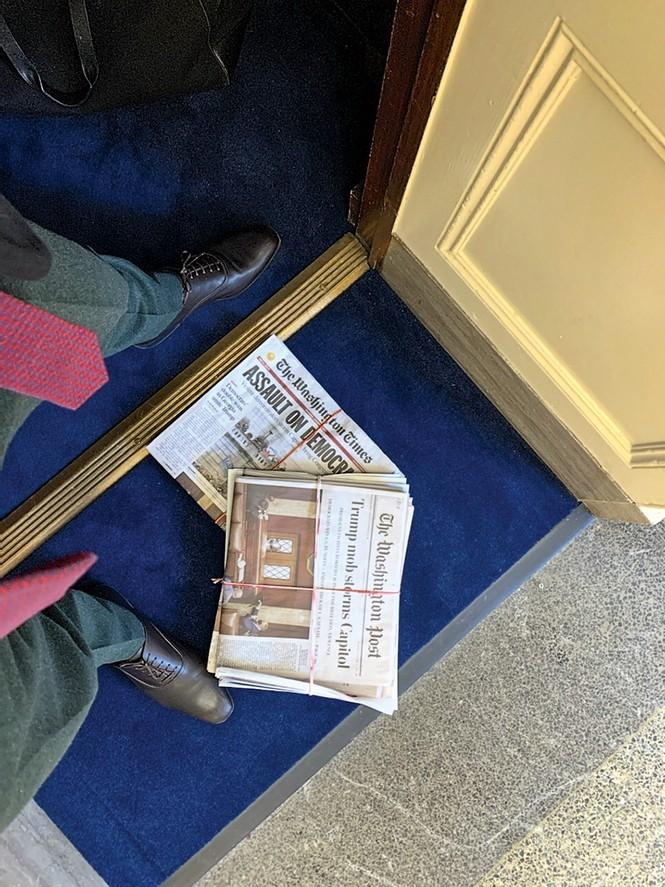

| 文章 | 章节 | 下一项 |
What the GOP Does to Its Own Dissenters
After January 6, Peter Meijer thought he could help lead the Republican Party away from an abyss. Now he laughs at his own naïveté.
by Tim Alberta
Late at night on the second Tuesday of January, Peter Meijer, a 33-year-old freshman congressman from West Michigan, paced the half-unpacked rooms of his new rental apartment in Washington, D.C., dreading the decision he would soon have to make.
Six days earlier, Meijer had pulled a smoke hood over his face and fled the U.S. House of Representatives as insurgents broke into the lower chamber. They were attempting to prevent Congress from certifying the results of the 2020 presidential election. Meijer had been on the job for all of three days. Once the Capitol was secured, he cast his vote to certify the election results. It was his first real act as a federal lawmaker—one he believed was perfunctory. Except that it wasn’t. The majority of his fellow House Republicans refused to certify the results, launching an assault on the legitimacy of American democracy.
That entire day—the vote, as much as the attack—had caught Meijer unprepared. His party’s leadership had provided no guidance to its members, leaving everyone to navigate a squall of rumor and disinformation in one-man lifeboats.
The next week, when Democrats introduced an article of impeachment and promptly scheduled a vote, seeking to hold President Donald Trump accountable for inciting the mob’s siege of the Capitol, Meijer steeled himself for some tough conversations within his party. But those conversations never happened: Most of Trump’s staunchest defenders were too shell-shocked to defend him, even behind closed doors, and the Republican leadership in the House was once again AWOL. There were no whipping efforts, no strategy sessions, no lectures on procedure or policy. Barreling toward one of the most consequential votes in modern history, everyone was on their own.
For Meijer, the stillness was unsettling. He felt that impeachment was warranted—“The vice president and the next two in the line of succession were inside the Capitol as it was being assaulted,” he says, “and for three hours the president was nowhere to be found”—but he longed for a dialogue. Growing up, he’d heard the legend of how a family friend, President Gerald Ford, had pardoned Richard Nixon in an act of mercy after Nixon had resigned to avoid the humiliation of being impeached and removed. Meijer’s first political memory was made watching the impeachment of Bill Clinton. Even as a kid, he sensed that it was trouble for the country. Now, after just over a week in office, he was bracing himself to vote to impeach the president of the United States—a president from his own party—without so much as a caucus meeting where competing cases might be presented.
Meijer felt angry and betrayed, “like I’d seen something sacred get trampled on.” He told himself that Trump needed to pay. But he worried that a rash impeachment of the president might unleash an even uglier convulsion than the one he’d just survived. And he knew that by voting to impeach he might be committing “career suicide before my career ever began.” In the days leading up to the vote, Meijer says, he barely slept.
“It was the worst 96 hours of my life,” he says.
Whatever his final decision, Meijer didn’t want to blindside the people back in his district. So he began making calls. The conversations did not go well. Meijer remembers one man, “a prominent business leader in Grand Rapids,” arguing that the election had been stolen, that Trump was entitled to a second term, that Meijer was a pawn of the “deep state.” The man went “full QAnon,” spouting conspiracy theories and threatening him with vague but menacing consequences if he voted to impeach. Meijer was well acquainted with that kind of talk; one of his own siblings was fully in the grip of right-wing conspiracies. Even so, the conversation “shook me to my core,” Meijer says, “because the facade had been stripped away. It showed me just how bad this had gotten.”
After Meijer hung up, he leafed through a copy of The Federalist Papers, hoping for an epiphany. He texted with friends. He talked with his wife. Finally, he consulted a list he’d compiled of like-minded members with whom he wanted to compare notes. It was a short list, and Meijer had already talked with most of them: Liz Cheney of Wyoming; Adam Kinzinger of Illinois; Fred Upton, who represented a neighboring district in Michigan. But there was one he had yet to connect with: Anthony Gonzalez, a second-term congressman from Ohio.
When Meijer reached Gonzalez on the phone, the call turned into a therapy session. Meijer kept debating with himself; meanwhile, Gonzalez, who had also been ambivalent, grew ever more adamant that Trump must be impeached. Meijer asked his colleague to explain the source of his certainty. “I can convince myself not to vote for impeachment,” Gonzalez said. “But if my son asks me in 20 years why I didn’t vote for impeachment, I couldn’t convince him.”
Meijer figured there could be no turning back. And he was fine with that. The Republican Party needed an intervention.
The next morning, January 13, Meijer received an encrypted message just as he was arriving at the Capitol. It was from a senior White House official, someone who’d heard he was on the fence, urging the new congressman to vote for impeachment. Meijer was stunned, but he’d already made up his mind anyway. Later that day, he joined Gonzalez and eight other House Republicans in voting to impeach Trump. Meijer was the only freshman among them—and the only freshman in U.S. history to vote to impeach a president of his own party.
“Of the 10, I’ve got the most respect for Peter—because he was brand-new,” Kinzinger, one of the GOP’s anti-Trump ringleaders, told me. “There were other freshmen who talked a big game, but the pressure got to them. Honestly, on the day before the vote, I thought we’d have 25 with us. Then it fell apart; I’m surprised we wound up with 10. But what I recognized with Peter, during our conversations, was that he never talked about the political implications. And that was rare. If someone brought up the political implications, that was a good indicator that they weren’t going to vote with us. But the people who never brought it up, I knew they would follow through. And Peter was one of them.”
Meijer figured there could be no turning back. And he was fine with that. The country needed a come-to-Jesus conversation about political extremism. The Republican Party needed an intervention over its addiction to Trump. He was going to help facilitate both—even if it meant forfeiting his career. He might lose his next election, he thought, but at least his group of 10 could offer “hope for some who wanted to [see] the Republican Party get past the darkness and the violence and that sense of foreboding and doom.”

Meijer (right) with Representative Kelly Armstrong of North Dakota (left) and Representative Stephanie Bice of Oklahoma (center) in the gallery of the House chamber shortly before rioters attempted to break in on January 6 (Tom Williams / Getty)
After the vote, Meijer’s congressional office—still barely staffed—was inundated with calls and messages. His cellphone throbbed with furious texts and emails. Meijer knew he had to get away. January 6 had ushered in a new era of political mayhem, and one week later, he had put a bull’s-eye on his own back. He rented a small place off the grid, packed his bags, and departed Washington with his wife. As he left town, something he’d said to Gonzalez earlier that day echoed through his mind.
“We’re in this together,” Meijer had told him.
Peter Meijer didn’t run for Congress to fight for the sanity of the country or the soul of the Republican Party. If anything, he’d hoped to represent a cease-fire. Justin Amash, the congressman who represented Michigan’s Third District for a decade, had by virtue of his constant criticism of Trump worn out his welcome with many Republican voters. When Amash made it known in the summer of 2019 that he’d be leaving the party to become an independent, Meijer announced that he would seek the Republican nomination. Convinced that Trumpism was a distraction from the country’s most pressing problems, Meijer ran a campaign that reflected a certain strategic detachment. He pledged to work with the president wherever possible, and ignore him whenever necessary. He denounced Amash’s calls for Trump’s first impeachment—for soliciting Ukraine’s assistance in his reelection campaign—telling a local news outlet, “I think the American people deserve better than political theater in the House of Representatives.”
Meijer had been born into nearly universal name recognition in Michigan: His great-grandfather Hendrik Meijer had founded the Meijer grocery-store chain there, which his grandfather and father grew into a behemoth, with nearly 250 stores throughout the Midwest. As a teen, he tried to avoid the attention and expectations that came with his last name by spelling it Meyer at East Grand Rapids High School. He left home for Columbia University, where he interrupted his undergraduate studies to deploy to Iraq as an Army intelligence specialist. Later, after spending 18 months in Afghanistan as a conflict analyst, he finished graduate school at NYU and found work doing urban redevelopment in Detroit. By then—and, he swears, without meaning to—he’d compiled quite the political résumé.
Read: The Michigan Republican who decided to tell the truth about election fraud
When he was elected with a six-point margin in November 2020, Meijer had no plans to become a troublemaker. He hoped to prioritize economic competitiveness with China. He wanted more oversight and accountability for troop deployments. He saw himself as a sober-minded person, someone who wasn’t heading to Congress for the culture wars or the tribal showdowns.
Meijer remembers one longtime member telling him: “This is the last thing Donald Trump will ever ask you to do.”
And then he got to Washington. Freshman orientation was a blur of propaganda and innuendo and state-sanctioned conspiracy mongering. Meijer watched, from a hotel lounge, as the president’s lawyers Rudy Giuliani and Sidney Powell held a deranged press conference at the headquarters of the Republican National Committee. New members listened to powerful lawmakers leveling accusations that had no apparent basis in fact. They compared the crazed voicemails they were getting from friends and family members and swapped stories of the intimidation they were subjected to by voters demanding that they overturn the presidential-election result.
Dismayed, a group of freshman Republicans asked for a meeting with Kevin McCarthy shortly after their swearing-in. According to multiple people who attended that meeting, the House minority leader refused to give them advice, explicit or implicit, about how to vote on the election certification. Whereas Mitch McConnell was whipping furiously for certification in his Senate caucus, McCarthy left his new House members without a clue as to the party’s position on whether Congress should obey the Constitution. When they pressed him—one of the freshmen asked whether Trump was crazy enough to believe that decertification would somehow keep him in office—McCarthy replied, “The thing you have to understand about Donald Trump is that he hasn’t been in government that long. He doesn’t know how these things work.”
As word got around that the freshmen were up for grabs, a lobbying blitz commenced. Some of the House hard-liners who sought to block certification—Mo Brooks, Jim Jordan, Matt Gaetz—shared discredited YouTube testimonies and Fox News clips to emphasize how the issue was playing with the conservative base. Countering that influence were the likes of Kinzinger and Cheney, who sat down with rookie lawmakers for one-on-one conversations, warning them of the precedent they would set by objecting to the election results. Meijer remembers one longtime member—who confessed that he did not believe the election had been stolen but said he would vote against certification anyway—telling him: “This is the last thing Donald Trump will ever ask you to do.”
Meijer knew that some Republicans had sincere concerns about election integrity; he himself feared that Democratic officials had taken advantage of the coronavirus pandemic and exceeded their authority to enroll absentee voters. But whatever issues he had with the way certain states had administered the election, those states had since ratified their results and submitted slates of electors to Congress to be counted. Under the Constitution, there was nothing left to do but count them and certify the final tally. Meijer says his colleagues chose to embrace a bad-faith interpretation of basic law; rather than a ministerial duty, the certification vote became “just another way to make your base happy” and humor the president, he says. “A lot of these people were just shrugging. But, I mean, we’d be basically destroying the Electoral College.”
On January 6, when both bodies of Congress convened in the House chamber, Speaker Nancy Pelosi asked most of the lawmakers to move up to the gallery as the proceedings began. Not long after that, Representative Paul Gosar announced his objection to the results in his home state of Arizona, the third in the alphabetical roll call. The senators adjourned to their side of the Capitol to deliberate, and Meijer excused himself for a bathroom break. Wandering, lost on his third day at work, he eventually found an elevator, which took him all the way down to the sub-basement, where he discovered a restroom. When he walked out a few minutes later, he saw a Capitol Police officer sprinting down the corridor, yelling into his radio: “Hallway clear!”
Meijer’s gut told him something was very wrong. But his brain dissented. This is the United States Capitol, he told himself. Nobody’s getting in here. Walking back with barely a brisker pace to the gallery, he discovered another officer guarding the door. “You want to be locked in,” he asked Meijer, “or locked out?” That seemed like an easy call. “I said to myself, There’s no safer place to be than inside the chamber,” Meijer remembers. It was his final moment of political innocence. Inside, members were fielding panicked calls from staff and sharing reports of the complex being breached and of tear gas in the Rotunda. As the rioters approached the chamber, their chanting now audible, Capitol Police shouted warnings for members to stay away from the windows.
The sergeant at arms had been pleading for calm, but suddenly his tone changed. He announced that smoke hoods were under the chairs and told members to put them on. Then he ordered an evacuation of the chamber. As Meijer helped a colleague with her hood, the mob was banging on the doors. Then a window shattered. While they looked down on some of their senior-most colleagues being rushed off the floor, Stephanie Bice, a fellow Republican freshman from Oklahoma, told Meijer that they were witnessing history. Stunned, she suggested that he take a photo. Meijer was already recording video on his iPhone. “Sad, sad, sad fucking history,” he told her.

Photo from Meijer’s iPhone: The House chamber being evacuated (Peter Meijer)
The Capitol Police herded members into elevators and sent them down to the sub-basement. For a few minutes—it felt much longer—they were on their own. “What’s going through my mind is, what happens if we turn the corner and see a group of rioters? We’re a large percentage of the House of Representatives, and we have no police presence with us. We’re wandering through a tunnel system that connects to buildings that have been evacuated,” Meijer recalls. “Nobody was in control of the situation.”
They found their way to a cafeteria in the Rayburn Building. But as soon as Capitol Police discovered them and noticed the windows facing out to the ground floor, they ordered another evacuation. This time, Capitol Police escorted them into the Longworth Building, to the Ways and Means Committee room, and set up a security perimeter outside. Catching his breath, Meijer felt like he was back in a war zone.
Inside the committee room, there was “a lot of tension, a lot of suspicion” among the members. There was no fraternizing across party lines; Democrats huddled with Democrats and Republicans with Republicans. But there was a shared sense of dread. “The folks who whipped up [the violence] were just as terrified as everyone else; they fled like everyone else,” Meijer says. “That was not ‘Oh, our plan worked!’ That was ‘Oh, good God.’ ”
Meijer remembers straining to hear Nancy Pelosi giving a speech through a thick mask. He remembers raiding a refrigerator in the office of Kevin Brady, the ranking Republican on the committee, and drinking a beer to pass the time. And he remembers walking into a small side room and encountering two House Republican colleagues. “They were discussing the Twenty-Fifth Amendment—talking about phone calls they made to the White House, encouraging officials to invoke the Twenty-Fifth Amendment,” Meijer says. “Neither of them voted for impeachment a week later.”
When the Capitol was finally secured and members returned to the House chamber, Meijer expected an outraged, defiant House of Representatives to vote in overwhelming numbers to certify the election results, sending a message to the mob that Congress would not be scared away from fulfilling its constitutional obligations. But as he began talking with his colleagues, he was shocked to realize that more of them—perhaps far more of them—were now preparing to object to the election results than before the riot.
On the House floor, moments before the vote, Meijer approached a member who appeared on the verge of a breakdown. He asked his new colleague if he was okay. The member responded that he was not; that no matter his belief in the legitimacy of the election, he could no longer vote to certify the results, because he feared for his family’s safety. “Remember, this wasn’t a hypothetical. You were casting that vote after seeing with your own two eyes what some of these people are capable of,” Meijer says. “If they’re willing to come after you inside the U.S. Capitol, what will they do when you’re at home with your kids?”
Meijer glanced down at his phone. It was crackling with messages from people in his district—some checking on his well-being; others warning him not to blow the insurrection out of proportion, arguing that it was little more than a spontaneous tour of the Capitol. He swiped past most of the missives. But one, from a longtime activist he’d gotten to know, caught his eye. “You better not buckle and wimp out to the liberals,” the man wrote. “Those who stormed the Capital today are True American Heroes. This election was a fraud and you know that’s true. Peter, don’t sell us out!!!”
“Those who stormed the Capitol attacked our republic today,” Meijer replied. “They trampled on the Constitution. We have a rule of law, courts, and peaceful means of resolving disputes.”
“No Sir. They are showing their God Given America Right,” the man texted back. “When the truth is being hidden, the Second Amendment gives every one of those people the right to do what they did today.”
Meijer silenced his phone and cast his vote to certify the election.
Listen to an interview with William J. Walker, sergeant-at-arms of the U.S. House of Representatives, on The Experiment.
Listen and subscribe: Apple Podcasts | Spotify | Stitcher | Google Podcasts
For all the negatives that defined Meijer’s first weeks on the job—the incompetence and the cravenness, the violence and the threats—he emerged from the gantlet relieved that at least now he was liberated to speak his mind about the GOP’s decay.
Meijer had never been a Trump guy. Like so many Republican candidates seeking to pass muster with the president’s base, he had been careful to say the right things. He’d touted Trump’s economic record. He’d ignored, or downplayed, much of his extreme rhetoric. But all the while, Meijer had studied Trump with trepidation. He viewed the 45th president as a manifestation of America’s psychological imbalance, someone who reflected our anger and insecurities instead of our confidence and aspirations. He feared Trump’s authoritarian instincts, but clung to a belief that the president’s grip on the American right would soon loosen.

Photo from Meijer’s iPhone: The January 7 newspapers delivered to his office, where he slept on the couch after voting to certify Biden’s victory (Peter Meijer)
After the impeachment vote, Meijer felt he was positioned to advocate for what he believed would be an imminent, sweeping overhaul of the party. He threw himself into the public debate surrounding January 6. He became a fixture on national news programs. He accepted every invitation—especially those that seemed hostile—to address local party chapters. At every stop, in every setting, Meijer forced the issue, believing that he was on the right side of history, and that an awakening was at hand.
“As of late January,” he says, “I thought there was the opportunity to have a harsh confrontation with reality. It was going to be a very unpleasant 18 months, 24 months, but maybe we would do the necessary soul-searching and reconstruction.”
His optimism didn’t last long. In February, two of the county-level Republican Parties in Meijer’s district—Calhoun and Barry—voted to formally censure him. (Calhoun’s leaders accused Meijer of having “betrayed the trust of so many who supported you and violate[d] our faith in our most basic constitutional values and protections.”) The next month, as other local parties across Michigan were debating similar reprimands of both Meijer and Fred Upton, the state GOP chair joked with party activists that “assassination” was one remedy for dealing with the two of them.
By April, Meijer had a primary challenger. The criticism back home was unceasing; the only praise he received was whispered. National polls showed that tens of millions of Republican voters still believed the election had been stolen. Looking around, Meijer saw that he was a leader without any following and realized how Pollyannaish he’d been. “It’s like, ‘All right, this is going to be a longer, deeper project than I thought,’ ” he says.
Meijer’s sense of urgency gradually gave way to self-doubt. He began to wonder whether his appeals to decency and democracy came across as “pearl clutching.” He could tell he was rubbing some of his constituents the wrong way—they could stomach a disagreement with their congressman; what they couldn’t tolerate was the lecturing and the finger-wagging. He sensed that he might be doing more harm than good with his high-minded rhetoric. “I’ve come to realize the limitations of performative outrage,” he says.
So he backed off. He took voters’ earfuls in stride. He says he decided that “by actively trying to correct them, I may have been inadvertently postponing the self-correction” that would come with some distance from Trump’s presidency.
Over time, the threats ebbed, the antagonistic encounters subsided, and Meijer got some semblance of his life back. He was able to spend more time on the policy issues he cared about. For most of his constituents, discussions of election integrity and January 6 and Meijer’s vote for impeachment had become redundant—and boring. “We had a moment in one of our town halls [when] there were all these people who said, ‘Can we talk about something else now?’ ” Meijer recalls.
In August, when I accompanied Meijer on a swing through his district during the congressional recess, something strange happened. A woman raised her hand, after Meijer’s luncheon talk at a Grand Rapids country club, and asked him about “the insurrection” on January 6. Everyone fell still; the room full of old friends who’d been buying raffle tickets and cracking jokes was suddenly on edge. Meijer had once offered lively commentary on the matter. But on this day, he was restrained, giving a brief synopsis of his whereabouts when the Capitol was overrun.
In the parking lot a few minutes later, Meijer turned to me. “I haven’t gotten that question in a long time,” he said. Sure enough, in more than a dozen stops across his district over the summer and fall, this was the only one where I saw anyone ask Meijer about the madness of January. Most of the questions he got were about the “socialist” Democratic agenda, the GOP’s prospects for taking back control of Congress in 2022, and President Joe Biden’s disastrous exit from Afghanistan. (This last topic allowed Meijer numerous victory laps for the unauthorized trip he took to Kabul during the U.S. evacuation. Having been in the crosshairs of his own party for so long, Meijer was delighted to be rebuked by the White House.)
In October, Meijer stood inside a classroom at his alma mater, East Grand Rapids High School, taking questions from constitutional-studies students. This was the very class that had fueled Meijer’s political imagination as a teenager. The sophomores and juniors he stood before were studying the same curriculum that had informed his core beliefs about America and the responsibilities of government. The students listened to Meijer warily. Finally, George, a shy-sounding student in the back of the room, raised his hand and announced that he had a question on behalf of his friends. “What we’re wondering,” George said sheepishly, “is how do you define what it means to be a Republican right now?”
Meijer thought for a moment. Then he launched into a soliloquy about how local control of political institutions produces more accountability, more efficiency, and better results. This was the answer to a question that George was not asking. The young man clearly wanted to understand how Meijer’s version of Republicanism differed from the Trumpist one, how the congressman might distinguish his vision for the party from the current MAGA model. George told me, after class, that he was frustrated by Meijer’s evasive response.
Later, over beers at a nearby pub, I reminded Meijer of his burden in the aftermath of the impeachment vote: He and the other nine dissenters were supposed to be “the hope” for their party’s future. He had just spoken to a group of soon-to-be voters whose notions of Republicanism were formed by red hats and angry chants and crazed tweets. Meijer had just looked the party’s future in the eye and acted as though all of that was normal. “How do you explain to George,” I asked, “the difference between the Republican Party that fills his imagination and that scares him, versus the Republican Party that you want to represent?”
“Well, my Republican Party wouldn’t scare him,” Meijer said with a shrug.
I asked if he understood why George and his friends might be scared right now. He smirked. “The inability to affirmatively and consistently reject anti-Semitism and white supremacy?”
The fundamental problem, Meijer said, is that Republicans are offering no plans for improving lives and making the future a more promising place. Instead, the party continues to rely on grievance and fear—and misinformation—to scare voters into their ranks. But he didn’t say any of this to George.
After our interview, Meijer went upstairs to a private lounge at the pub to mingle with small-business owners. For a guy who talks a lot about the “militants” in his party, he doesn’t engage with them much. Meijer benefits from representing wealthy and well-educated pockets of West Michigan, an area where pious Dutch sensibilities tend to dull the partisan discourse. This means that he’s relatively insulated from the hysteria some of his colleagues deal with daily. Meijer insists he’s not numb to the enduring threat—he can still picture the man at a fairgrounds screaming “Motherfucking traitor!” at him—but he does believe, at least in his district, that the worst has passed.
“For a lot of people here, they swore that impeachment vote was the end for Peter Meijer,” says Ben Geiger, the chair of the Barry County Republican Party, which voted in February to censure the congressman. “But I’ll tell you, it hasn’t come up much since [February]. He’s been working hard on a lot of other things. I don’t know if he’s trying to make people forget—he’s doing his job. But I do think some people have let it go.”
This might be the best-case scenario for Meijer’s own career—Republican voters forgiving and forgetting, politely moving on, putting January 6 behind them. It might also be the worst-case scenario for America.
Here’s the thing: Some people have not let it go. Large pluralities of Republican voters—depending on the poll, sometimes outright majorities of them—believe that the election was stolen. Thousands of demonstrators have protested at state-capitol buildings, demanding forensic audits of the 2020 results. Scores of local election officials nationwide have been run out of office, many of them replaced by people who insist that the system they’re now charged with overseeing is rigged.
Meijer knows lots of people who can’t let it go. There’s one he thinks of every day: his sister.
Haley Meijer is two years older than her brother. Along with a younger sister, they were close as children but grew into very different people: Peter the quiet, straitlaced rule follower; Haley the rebel. She was a hippie who bashed the family’s conservative politics, then an avid Trump supporter eager for culture wars with the elitist left. More recently, she’s become a QAnon follower and devout conspiracy theorist.
Watching Meijer contort himself to avoid criticizing Kevin McCarthy was the closest I’ve come to seeing a man tortured.
When Meijer announced his run for Congress, he said, Haley was enthusiastic. Which stood to reason: He was running against a Democrat—to the QAnon crowd, the party of pedophiles and cannibals—while promising to partner with Donald Trump to make America great again. Not long after his victory in November, however, Haley became fixated on the idea that the election had been rigged. She peppered him with bad stats and debunked rumors and thirdhand accounts of cheating. Meijer had checked with local officials in Michigan to confirm that everything—registration numbers, voter turnout, down-ballot patterns—added up. He tried telling her as much. “But she was down the rabbit hole, watching all the testimony from these cases brought by Rudy Giuliani. I’m watching the same hearings, trying to find anything that resembles sanity,” he says. “And she’s addicted.”
When the mob invaded the Capitol on January 6, Meijer received a text message from his sister: “Sending love and prayers.” He thanked her and confirmed that he was safe. But she was silent after he voted to certify the election that night, and after he voted to impeach Trump and was deluged with death threats. Soon after, Haley, a singer and songwriter based in Los Angeles, began commenting favorably on the Facebook posts of Tom Norton, who announced a campaign to defeat Meijer in the 2022 Republican primary. (Haley Meijer said in a statement that she loves and admires her brother, though they “have differing beliefs on certain subjects.”)
In her worldview, Meijer says, “there’s no room for disagreements. It’s good versus evil. You have the side of light and the side of dark. You have God and you have Satan. And if you’re not on the side of God, then what side are you on?”
This has been perhaps the most trying aspect of Meijer’s job. While grieving his sister’s obsession with conspiracy theories, he has to work alongside the very people, like fellow freshman Marjorie Taylor Greene, who are pushing those lies. “They make folks like my sister think they’re on her team,” Meijer says. “And that’s what pisses me off. They aren’t the ones paying the price when the consequences come due. Paul Gosar wasn’t shot on January 6—Ashli Babbitt was.”
I was surprised to hear Meijer mention Gosar, the conspiracy-spreading, white-nationalist-sympathizing congressman who in November was censured by the House for sharing an animated video that depicted him murdering Representative Alexandria Ocasio-Cortez. In our many hours of conversation, Meijer had declined to call out any of his colleagues by name. (Watching him contort himself to avoid criticizing Kevin McCarthy was the closest I’ve come to seeing a man tortured.) This reticence, he explained, is his way of trying to bring down the temperature. Meijer is convinced that there are more Republicans like him—rational, pragmatic, disgusted by the turn the party has taken—than there are like Gosar. Because they have the numbers, he says, there’s no need to engage in guerrilla tactics. They can reason and debate like adults. They can take the high road. They can play the long game.
Maybe he’s right. Or maybe this will prove a ruinous miscalculation. Whatever the numbers, the reality is that Meijer’s side is getting quieter while the other side is getting louder. His side is letting go while the other side is digging in. His side is unilaterally disarming while the other side is escalating every day.
In the middle of September, Anthony Gonzalez announced that he was retiring from Congress. Describing the strain on his family—his wife and children required a police escort due to the threats against him—Gonzalez told The New York Times that seeking reelection wasn’t worth it. I texted Meijer about the news. “Gutting,” he wrote back.
When we spoke next, a few weeks later, Meijer sounded defeated. Although Gonzalez was the first of the 10 House Republican impeachment supporters to fall by the wayside, he wouldn’t be the last. The stress of the past nine months had ground down the others in the group—which, he argued, is exactly what Trump and his cronies wanted. “What that faction is banking on is exhaustion,” Meijer said. “They want life in the shoes of the 10 of us to be miserable.” The question he and his friends now ask of themselves isn’t just “Can I win reelection?” Instead, he said, “It’s ‘Am I going to have to talk for the next few years about Italian military satellites and bamboo ballots and whatever [MyPillow CEO] Mike Lindell says?’ ”
In the days after January 6, Meijer believed he was part of a mission to rescue the Republican Party from itself. Now he laughs at his own naïveté. Ten people isn’t a popular movement. And in truth, only two of them—Cheney and Kinzinger—have shown the stomach for the sort of sustained offensive that would be required to rehabilitate the GOP. The other eight, having glanced over their shoulders and seen no reinforcements on the way, chose varying degrees of retreat.
“I don’t blame them. They did their tour in Vietnam; why would they want to go back?” Kinzinger told me in mid-October. “The responsibility for fixing the party isn’t on the 10 of us; it’s on the 180 who didn’t do anything. It’s kind of like Flight 93: If only a few people fight back, that plane hits the Capitol. But because everyone fought back, it didn’t.”
Two weeks after we spoke, Kinzinger announced his retirement from Congress.
In light of his side’s attrition—Cheney kicked out of the GOP leadership, Gonzalez and Kinzinger quitting Congress—I asked Meijer how he now thinks about the divisions in his party. “There are people who are part of the problem,” he said. “There are people who are actively trying to fight the problem. And then there are people who have become acutely aware of the problem, but don’t know how to fight it.”
Meijer wants to believe that he’s in the second group. But more and more, he belongs in the third. He can see the foundational threats facing American self-government—but he can’t decide how best to counteract them. If he now views the struggle to rebuild his party as a long-term proposition, then part of his job is “just surviving,” he says, sticking around long enough to recruit allies and gain momentum to take back control of the GOP. It’s a common instinct, and a dangerous one, because the party is playing its own long game.
In the fall, a bundled donation of $25,000 was deposited into Meijer’s campaign account, courtesy of the National Republican Congressional Committee, which named him to its “Patriot Program.” It was an honor not bestowed upon some of the others who’d voted for impeachment. Maybe this was Kevin McCarthy and the party leadership mending fences, signaling to Meijer that they value him despite his breaking rank. Or maybe it was the party rewarding his recent good behavior—and reminding him of the benefits of being a team player.
Meijer will face multiple primary challengers in 2022, including a Trump-administration official, John Gibbs, who already has the former president’s endorsement against “RINO Congressman Peter Meijer.” Because of the district’s moderate makeup and his ample finances, Meijer is favored to win reelection. What comes next is murkier. It’s already rumored in Michigan Republican circles that Meijer will run for U.S. Senate in 2024. Rising that quickly in today’s GOP—from unknown Millennial to statewide nominee in the space of four years—will demand playing to the party base. That won’t necessarily require the overt delegitimization of American democracy. A blind eye here, some radio silence there, will do the trick.
This is the essence of Meijer’s struggle. He still wants to do the right thing; this fall, he was one of just nine House Republicans to vote to hold Steve Bannon in contempt of Congress for defying a subpoena issued by the committee investigating the January 6 insurrection. But Meijer also wants a future in a party that is controlled by the president he voted to exile. GOP elders have told Meijer that because he barely overlapped with Trump, he may not be on Mar-a-Lago’s radar like some of the Republican stalwarts who voted to impeach. It’s better not to poke the bear, they tell him; better to let Trump and his loyalists forget the name Peter Meijer altogether.
In this sense, the Republican Party is embracing that old definition of insanity. Its leaders believed they could wait out Trump’s candidacy in 2016. Then they believed they could wait out his presidency. Now they believe they can wait him out yet again—even as the former president readies a campaign to reclaim his old job and makes clear his intent to run not just against a Democratic opponent but against democracy itself.
Meijer says he’s “pretty much” resigned to Trump winning his party’s nomination in 2024, and worries that the odds of Trump returning to the White House are growing stronger as Biden’s presidency loses steam. Meijer knows the strain Trump’s candidacy might place on a system that nearly buckled during the last election cycle. What’s worse: Meijer sees Trump inspiring copycats, some of them far smarter and more sophisticated, enemies of the American ideal who might succeed where Trump failed.
“The real threat isn’t Donald Trump; it’s somebody who watched Donald Trump and can do this a lot better than he did,” Meijer says.
The powerlessness in his voice when he says this is unnerving. In the space of a year, he transformed from a political romantic to an emboldened survivor to a daunted skeptic. He tried to force a reckoning on his party; now the reckoning is coming for Republicans like him.
At one point, Meijer described to me the psychological forces at work in his party, the reasons so many Republicans have refused to confront the tragedy of January 6 and the nature of the ongoing threat. Some people are motivated by raw power, he said. Others have acted out of partisan spite, or ignorance, or warped perceptions of truth and lies. But the chief explanation, he said, is fear. People are afraid for their safety. They are afraid for their careers. Above all, they are afraid of fighting a losing battle in an empty foxhole.
Meijer can’t blame them. “I just feel lonely,” he told me, sighing with exasperation.
Most of his colleagues, Meijer believes, want to be with him. They pat him on the back and whisper encouragement into his ear. They say they’re rooting for his side. But they don’t think his side can win. So they do nothing, convincing themselves that the problem will take care of itself, while guaranteeing that it will only get worse.
This article appears in the January/February 2022 print edition with the headline “The Freshman.”
This article was downloaded by calibre from https://www.theatlantic.com/magazine/archive/2022/01/peter-meijer-freshman-republican-impeach/620844/
| 文章 | 章节 | 下一项 |